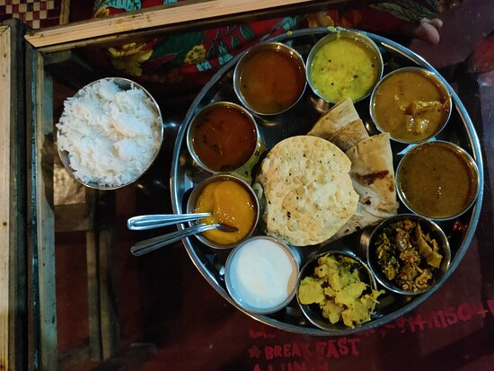
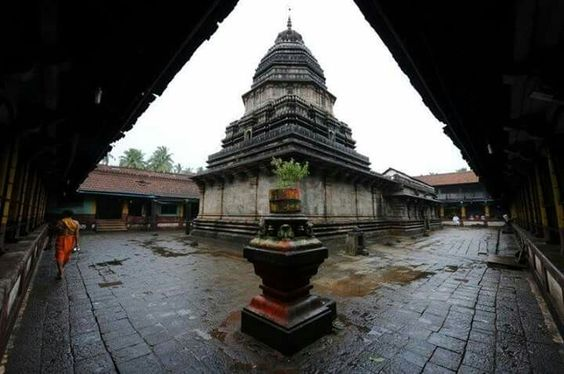

Culture And Traditions in Gokarna
| Home Page | Culture and Traditions | Places to Visit | Gallery | Contact Us |
Gokarna is a small temple town located in the Uttara Kannada district of
Karnataka state in southern India, known as one of seven important centers of
pilgrimage in Hinduism. Here are some cultural and traditional aspects of
Gokarna:
|
Food: Famous Gokarna food is White Fish- a whitecurry made from fishes like tilapia,cod,bass,grouper,snapper,haddock, and catfish. Seafood fired rice with chili fish is another luscious combo to experience the foodgasm in Gokarna. |
 |
|  | Temples : Shiva is the most worshipped deity in the town, and to whom its main temple, also known as Mahabaleshwara, is dedicated. At this temple is housed what is believed by some to be the earliest Shiva Linga (Atmalinga).The temple town of Gokarna is filled with palm and coconut trees, and there are two major streets in this town, which consist of neat, traditional houses made of |
|
Festivals: Gokarna is well-known for its festivities, such as the Shivaratri festival, which is celebrated with zeal and dedication.While priests and pilgrims chant songs in honour of Shiva, the two enormous temple chariots lead a procession through the town's small alleyways. Over a hundred people are required to draw the chariots with strong ropes as priests perform religious ceremonies inside. During the four-day Shiva Ratri celebration, up to 20,000 pilgrims visit the little town of Gokarna. |
.jpg) |
 |
Beaches: Once your culture-cravings have been
satisfied, head straight for one of Gokarna's famed beaches. While Om
Beach is the most popular, there are other beaches like Kudle Beach,
Half Moon Beach, and Paradise Beach |